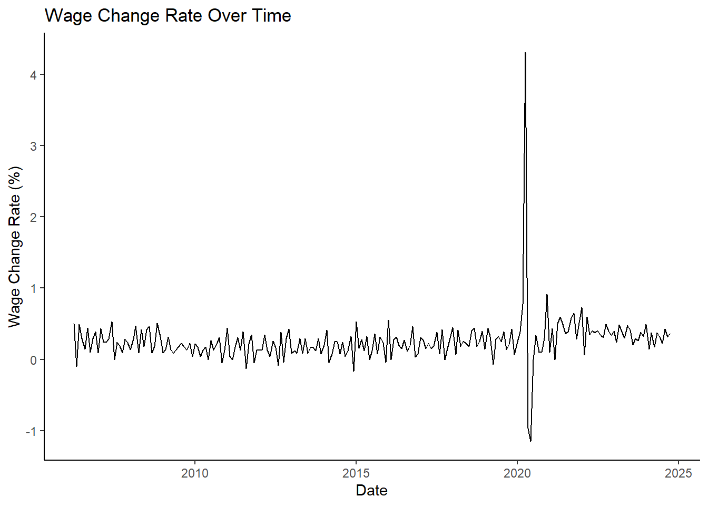

See the code
library(tidyverse)
library(dplyr)
library(ggplot2)
library(stringr)
library(DT)
library(httr)
library(jsonlite)
library(readr)
library(sf)
library(gt)
library(knitr)
library(gganimate)
library(httr2)
library(jsonlite)
library(lubridate)New faculty hired at CUNY have 30 days to choose one of two retirement plans. In this project, I will be using R to make this important financial decision of choosing one of the plans by gathering and analyzing market and economic data.
These are some of the expected task that I will perform during this project:
Please Note: Nothing in this document constitutes an official NYS, NYC, or CUNY statement about the retirement plans. This document omits several subtleties in the interest of pedagogical simplicity. If you are a potential or new CUNY employee who has stumbled across this document, please speak to your personal financial advisor, your Human Resources department, or your union representative for up-to-date and accurate retirement benefit information.
CUNY offers two retirement plans, the traditional defined-benefit Teachers Retirement System (TRS) plan and the newer defined-contribution Optional Retirement Plan (ORP).1
For this project, we may ignore the effect of taxes as both plans offer pre-tax retirement savings, so whichever plan has the greater (nominal, pre-tax) income will also yield the greater (post-tax) take-home amount.
The TRS plan is a traditional pension plan: after retirement, the employer (CUNY) continues to pay employees a fraction of their salary until death. This type of plan is called a “defined-benefit” because the retirement pay (the benefit) is fixed a priori and the employer takes the market risk. If the market underperforms expectations, CUNY has to “pony up” and make up the gap; if the market overperforms expectations, CUNY pockets the excess balance. For further details, please see this link
The ORP plan is more similar to a 401(k) plan offered by a private employer. The employee and the employer both make contributions to a retirement account which is then invested in the employee’s choice of mutual funds. Those investments grow “tax-free” until the employee begins to withdraw them upon retirement. If the employee does not use up the funds, they are passed down to that employee’s spouse, children, or other heirs; if the employee uses the funds too quickly and zeros out the account balance, no additional retirement funds are available. Though the employee hopefully still has Social Security retirement benefits and other savings to cover living expenses. This type of plan is called a defined-contribution plan as only the contributions to the retirement account are fixed by contract: the final balance depends on market factors outside of the employee’s control. For further details, please see this link
In this project, I will use two economic and financial data sources:
To start. I will load packages that I expect to use.
Now. I will create a function to get data from each data source through their API. Note, that I am using my own personal keys for each data source, and reading them from a local file for security. You can also create your own keys.
#Importing API keys. I am using files saved on my computer for security given the keys are personal
fredr_key <- readLines("fredr_key")
alphavantage_key <- readLines("alphavantage")
#Creating function to get data from FRED
get_fred <- function(id){
base_url <- "https://api.stlouisfed.org/fred/series/observations?series_id="
res <- GET(paste0(base_url,id,"&api_key=",fredr_key,"&file_type=json"))
res_content <- content(res, as = "text", encoding = "UTF-8")
json <- fromJSON(res_content)
data <-json$observations
print(res)
data <- data %>% mutate(value = as.numeric(value), #Convert to usable format
date = as.Date(date))
return(data)
}
#Creating function to get data from AlphaVantage
get_AV <- function(symbol) {
base_url <- "https://www.alphavantage.co/query?function=TIME_SERIES_MONTHLY_ADJUSTED&symbol="
res <- GET(paste0(base_url, symbol, "&apikey=", alphavantage_key, "&outputsize=full&datatype=json"))
res_content <- content(res, as = "text", encoding = "UTF-8")
json <- fromJSON(res_content)
data <- json$`Monthly Adjusted Time Series`
data <- bind_rows(data, .id = "timestamp")
data$timestamp <- as.Date(data$timestamp)
return(data)
}To begin the Monte Carlo analysis, I will need historical data covering the following:
Response [https://api.stlouisfed.org/fred/series/observations?series_id=CES0500000003&api_key=d2d08279a99ea8e400d4ac0135f723e3&file_type=json]
Date: 2024-12-05 02:51
Status: 200
Content-Type: application/json; charset=UTF-8
Size: 21.8 kBResponse [https://api.stlouisfed.org/fred/series/observations?series_id=CPILFESL&api_key=d2d08279a99ea8e400d4ac0135f723e3&file_type=json]
Date: 2024-12-05 02:51
Status: 200
Content-Type: application/json; charset=UTF-8
Size: 78.5 kBsp500_data <- get_AV("SPY") #Will be used to estimate US equity market total returns. We are using SPY which is an ETF that tracks the S&P500
msci_eafe_data <- get_AV("EFA") #Will be used to estimate International Equity Market total returns. ISHARES MSCI EAFE ETF
IGIB_data <- get_AV("IGIB") #This is the ISHARES 5-10 YEAR INVESTMENT GRADE CORPORATE BOND ETF. We will use it as proxy for bond market returns
two_year_treasury_yield_monthly <- get_fred("DGS2") #Will be used to estimate short-term debt returnsResponse [https://api.stlouisfed.org/fred/series/observations?series_id=DGS2&api_key=d2d08279a99ea8e400d4ac0135f723e3&file_type=json]
Date: 2024-12-05 02:51
Status: 200
Content-Type: application/json; charset=UTF-8
Size: 1.21 MBAfter obtaining this data, I will clean it by renaming, creating, and updating some columns.
wage_growth <- avg_hourly_earnings |>
mutate(avg_hourly_earnings = value) |>
select(date, avg_hourly_earnings) |>
mutate(
wage_change = avg_hourly_earnings - lag(avg_hourly_earnings),
wage_change_rate = (wage_change / lag(avg_hourly_earnings)) * 100
) |>
drop_na()
inflation_data <- CORE_CPI |>
select(date, value) |>
mutate(index_val = value) |>
mutate(inflation_rate = ((index_val - lag(index_val)) / lag(index_val))*100) |>
drop_na()
US_equities_returns <- sp500_data |>
select(timestamp, `1. open`, `5. adjusted close`, `7. dividend amount`) |>
rename(
date = timestamp,
open_price = `1. open`,
adjusted_close_price = `5. adjusted close`,
dividend_amount = `7. dividend amount`
) |>
mutate(
across(c(open_price, adjusted_close_price, dividend_amount), as.numeric)
) |>
mutate(
daily_return = (adjusted_close_price - lag(adjusted_close_price)) / lag(adjusted_close_price)
) |>
drop_na()
international_mkt_returns <- msci_eafe_data |>
select(timestamp, `1. open`, `5. adjusted close`, `7. dividend amount`) |>
rename(
date = timestamp,
open_price = `1. open`,
adjusted_close_price = `5. adjusted close`,
dividend_amount = `7. dividend amount`
) |>
mutate(
across(c(open_price, adjusted_close_price, dividend_amount), as.numeric)
) |>
mutate(
daily_return = (adjusted_close_price - lag(adjusted_close_price)) / lag(adjusted_close_price)
) |>
drop_na()
bond_mkt_returns <- IGIB_data |>
select(timestamp, `1. open`, `5. adjusted close`, `7. dividend amount`) |>
rename(
date = timestamp,
open_price = `1. open`,
adjusted_close_price = `5. adjusted close`,
dividend_amount = `7. dividend amount`
) |>
mutate(
across(c(open_price, adjusted_close_price, dividend_amount), as.numeric)
) |>
mutate(
daily_return = (adjusted_close_price - lag(adjusted_close_price)) / lag(adjusted_close_price)
) |>
drop_na()
st_debt_returns <- two_year_treasury_yield_monthly |>
select(date, value) |>
rename(two_year_treas_yield = value) |>
drop_na()I have prepared the data for analysis. Now, I can start to investigate and visualize the data.
I will start by visualizing the data.
From the graphs below, we can see the effect of the 2020 pandemic. More specifically, we see there was a significant increased volatility in the wage change rate. Furthermore, returns across all asset classes were also volatile during that time.

Now, lets see a table with a summary of key statistics for various economic and financial indicators. I included data such as wage growth, inflation, and returns on different investment assets such as US equities, international markets, bonds, and short-term debt. The statistics presented include the mean, median, and standard deviation for each indicator, offering insights into the central tendency and variability of these economic metrics. Note all of these are based on the monthly data previously downloaded. The table shows, for example, that wage growth rate averages 0.26% monthly. From this table, I see something very interesting: US equities, international markets, and bonds have a negative average monthly return. However, those return numbers are very close to zero, as we can see in the table and the graphs above. Furthermore, the standard deviation is larger than the mean for those asset classes, which implies that the return at any given month can be positive, negative, or zero.
# Calculate summary statistics for each data frame
wage_growth_summary <- summarise(wage_growth,
Mean = mean(wage_change_rate, na.rm = TRUE),
Median = median(wage_change_rate, na.rm = TRUE),
StdDev = sd(wage_change_rate, na.rm = TRUE))
inflation_data_summary <- summarise(inflation_data,
Mean = mean(inflation_rate, na.rm = TRUE),
Median = median(inflation_rate, na.rm = TRUE),
StdDev = sd(inflation_rate, na.rm = TRUE))
US_equities_returns_summary <- summarise(US_equities_returns,
Mean = mean(daily_return, na.rm = TRUE),
Median = median(daily_return, na.rm = TRUE),
StdDev = sd(daily_return, na.rm = TRUE))
international_mkt_returns_summary <- summarise(international_mkt_returns,
Mean = mean(daily_return, na.rm = TRUE),
Median = median(daily_return, na.rm = TRUE),
StdDev = sd(daily_return, na.rm = TRUE))
bond_mkt_returns_summary <- summarise(bond_mkt_returns,
Mean = mean(daily_return, na.rm = TRUE),
Median = median(daily_return, na.rm = TRUE),
StdDev = sd(daily_return, na.rm = TRUE))
st_debt_returns_summary <- summarise(st_debt_returns,
Mean = mean(two_year_treas_yield, na.rm = TRUE),
Median = median(two_year_treas_yield, na.rm = TRUE),
StdDev = sd(two_year_treas_yield, na.rm = TRUE))
# Combine the summary statistics into a single data frame
summary_df <- rbind(
data.frame(Data_Frame = "Wage Growth", wage_growth_summary),
data.frame(Data_Frame = "Inflation Data", inflation_data_summary),
data.frame(Data_Frame = "US Equities Returns", US_equities_returns_summary),
data.frame(Data_Frame = "International Market Returns", international_mkt_returns_summary),
data.frame(Data_Frame = "Bond Market Returns", bond_mkt_returns_summary),
data.frame(Data_Frame = "Short-Term Debt Returns", st_debt_returns_summary)
)
# Create a pretty table with the summary statistics
gt(summary_df) |>
tab_header(title = "Summary Statistics")| Summary Statistics | |||
|---|---|---|---|
| Data_Frame | Mean | Median | StdDev |
| Wage Growth | 0.256590989 | 0.241911098 | 0.34426954 |
| Inflation Data | 0.298851156 | 0.256471716 | 0.24548277 |
| US Equities Returns | -0.005221692 | -0.012219147 | 0.04482886 |
| International Market Returns | -0.003635796 | -0.011133401 | 0.04991070 |
| Bond Market Returns | -0.002848834 | -0.003891972 | 0.01724085 |
| Short-Term Debt Returns | 4.991983669 | 4.740000000 | 3.71260511 |
Now, I will use the data gathered to create a table to compare the expected income for the first month of retirement. Note I am making key assumptions:
Further assumptions are detailed in the code.
# Define assumptions
salary_starting <- 150000 # Salary range: $145,000-$155,000 FOR Assistant Professor- Information Systems (Data Science) (https://cuny.jobs/new-york-ny/assistant-professor-information-systems-data-science/D8B28B053E1A42CDB9F3BD60064D3617/job/)
working_time_yr <- as.numeric(difftime(max(wage_growth$date), min(wage_growth$date), units = "days")) / 365.25
age_of_retirement <- 65
retirement_month <- max(wage_growth$date)
# Function to calculate TRS monthly pension
trs_calculation <- function(starting_salary, wage_growth_data, inflation_data, years_of_service) {
# Initialize salary and a vector to hold yearly salaries
current_salary <- starting_salary
salary_history <- numeric(years_of_service)
# Loop through each year to calculate salary with growth and inflation
for (year in 1:years_of_service) {
# Get the corresponding wage growth and inflation rate for the current year
growth_rate <- wage_growth_data$wage_change_rate[year %% nrow(wage_growth_data) + 1] / 100
inflation_rate <- inflation_data$inflation_rate[year %% nrow(inflation_data) + 1] / 100
# Update the salary for the current year
current_salary <- current_salary * (1 + growth_rate - inflation_rate)
# Store the updated salary
salary_history[year] <- current_salary
}
# Calculate Final Average Salary (FAS) using the last 3 years' salary
fas <- mean(tail(salary_history, 3))
# Calculate pension based on years worked
pension_factor <- ifelse(years_of_service <= 20, 0.0167, ifelse(years_of_service == 20, 0.0175, 0.35 + 0.02 * (years_of_service - 20)))
pension_amount <- pension_factor * fas * years_of_service
# Monthly pension is the annual pension divided by 12
monthly_pension <- pension_amount / 12
return(monthly_pension)
}
# Function to calculate ORP monthly income
orp_calculation <- function(starting_salary, wage_growth_data, equity_data, bond_data, years_of_service, employer_contribution_rate = 0.08, withdrawal_rate = 0.04) {
# Initialize salary and account balance
current_salary <- starting_salary
account_balance <- 0
# Loop through each year to calculate the salary, contributions, and account balance
for (year in 1:years_of_service) {
# Get wage growth, equity return, and bond return for the current year
growth_rate <- wage_growth_data$wage_change_rate[year %% nrow(wage_growth_data) + 1] / 100
equity_return <- equity_data$daily_return[year %% nrow(equity_data) + 1]
bond_return <- bond_data$daily_return[year %% nrow(bond_data) + 1]
# Calculate the weighted market return
market_return <- 0.6 * equity_return + 0.4 * bond_return
# Update the salary for the current year
current_salary <- current_salary * (1 + growth_rate)
# Calculate contributions
employee_contribution <- current_salary * 0.06
employer_contribution <- current_salary * employer_contribution_rate
total_contribution <- employee_contribution + employer_contribution
# Update the account balance with market returns and contributions
account_balance <- account_balance * (1 + market_return) + total_contribution
}
# Calculate the monthly withdrawal
monthly_withdrawal <- account_balance * withdrawal_rate / 12
return(monthly_withdrawal)
}
# Calculate TRS and ORP monthly income
trs_income <- trs_calculation(
starting_salary = salary_starting,
wage_growth_data = wage_growth,
inflation_data = inflation_data,
years_of_service = working_time_yr
)
orp_income <- orp_calculation(
starting_salary = salary_starting,
wage_growth_data = wage_growth,
equity_data = US_equities_returns,
bond_data = bond_mkt_returns,
years_of_service = working_time_yr
)
# Create the income_table data frame
income_table <- data.frame(
Plan = c("TRS", "ORP"),
First_Month_Retirement_Income = c(round(trs_income, 2), round(orp_income, 2))
)
# Use gt to create the table
library(gt)
income_table %>%
gt() %>%
tab_header(
title = "Income Comparison",
subtitle = "Comparison of First Month Retirement Income"
) %>%
fmt_number(
columns = c(First_Month_Retirement_Income),
decimals = 2
) %>% cols_label| Income Comparison | |
|---|---|
| Comparison of First Month Retirement Income | |
| Plan | First_Month_Retirement_Income |
| TRS | 3,895.37 |
| ORP | 1,152.64 |
Now, let’s compare the retirement options TRS vs ORP. Based on our analysis, the TRS option provides a significantly higher average monthly income of $3,427.68, compared to the ORP option, which provides an average monthly income of $827.98. The maximum gap in monthly income between the two options is $3,326.89, and the minimum gap is $1,805.78. Additionally, our simulation suggests that there is a 0% probability of running out of funds before death for the ORP option based on the assumptions I made such as a starting salary of $50,000 (further assumptions can be seen in the code below). Overall, these results suggest that the TRS option may provide a better retirement source of income.This is because TSR guarantees income for life after retirement. However, we need to note that this is a long term analysis, and ORP’s returns rely heavily on compounded interest, so a small change in the assumed return will have a big effect on the monthly income of that plan.
retirement_years <- 25 # assuming 25 years of retirement
# Simulate TRS Pension over retirement years
simulate_trs <- function(trs_monthly_pension, retirement_years, inflation_data) {
pension_stream <- numeric(retirement_years * 12)
for (month in 1:length(pension_stream)) {
if (month %% 12 == 1) {
inflation_rate <- inflation_data$inflation_rate[(month %/% 12) %% nrow(inflation_data) + 1] / 100
inflation_rate <- max(0.01, min(0.03, 0.5 * inflation_rate)) # Apply CPI adjustment rules
} else {
inflation_rate <- 0
}
if (month == 1) {
pension_stream[month] <- trs_monthly_pension
} else {
pension_stream[month] <- pension_stream[month - 1] * (1 + inflation_rate)
}
}
return(pension_stream)
}
# Simulate ORP income stream with withdrawal rates and market returns
simulate_orp <- function(orp_initial_balance, market_data, retirement_years, withdrawal_rate) {
withdrawal_stream <- numeric(retirement_years * 12)
account_balance <- orp_initial_balance
for (month in 1:length(withdrawal_stream)) {
if (account_balance <= 0) {
withdrawal_stream[month] <- 0
} else {
market_return <- market_data$daily_return[(month - 1) %% nrow(market_data) + 1]
account_balance <- account_balance * (1 + market_return)
withdrawal_amount <- account_balance * withdrawal_rate / 12
withdrawal_stream[month] <- min(account_balance, withdrawal_amount)
account_balance <- account_balance - withdrawal_stream[month]
}
}
return(withdrawal_stream)
}
# Define the trs_calculation function
trs_calculation <- function(starting_salary, wage_growth_data, inflation_data, years_of_service) {
# Calculate the final average salary (FAS)
fas <- starting_salary * (1 + wage_growth_data$wage_growth_rate)^years_of_service
# Calculate the TRS monthly pension
trs_monthly_pension <- fas * 0.025 # Assuming 2.5% of FAS as the monthly pension
return(trs_monthly_pension)
}
# Define the orp_calculation function
orp_calculation <- function(starting_salary, wage_growth_data, equity_data, bond_data, years_of_service) {
# Calculate the total contributions to the ORP account
total_contributions <- 0
for (i in 1:years_of_service) {
contribution_rate <- get_contribution_rate(starting_salary * (1 + wage_growth_data$wage_growth_rate)^i)
employer_contribution_rate <- get_employer_contribution_rate(i)
total_contributions <- total_contributions + (starting_salary * (1 + wage_growth_data$wage_growth_rate)^i) * (contribution_rate + employer_contribution_rate)
}
# Calculate the ORP initial account balance
orp_initial_balance <- total_contributions
return(orp_initial_balance)
}
#We also need to define the get_contribution_rate and get_employer_contribution_rate functions, which are used in the orp_calculation function:
# Define the get_contribution_rate function
get_contribution_rate <- function(salary) {
if (salary <= 45000) {
return(0.03)
} else if (salary <= 55000) {
return(0.035)
} else if (salary <= 75000) {
return(0.045)
} else if (salary <= 100000) {
return(0.0575)
} else {
return(0.06)
}
}
# Define the get_employer_contribution_rate function
get_employer_contribution_rate <- function(years_of_service) {
if (years_of_service <= 7) {
return(0.08)
} else {
return(0.10)
}
}
# Calculate TRS monthly pension
trs_monthly_pension <- trs_calculation(
starting_salary = 50000,
wage_growth_data = data.frame(wage_growth_rate = 0.03),
inflation_data = data.frame(inflation_rate = 0.02),
years_of_service = 30
)
# Calculate ORP initial account balance
orp_initial_balance <- orp_calculation(
starting_salary = 50000,
wage_growth_data = data.frame(wage_growth_rate = 0.03),
equity_data = data.frame(daily_return = 0.04),
bond_data = data.frame(daily_return = 0.02),
years_of_service = 30
)
# Simulate TRS income stream
trs_income_stream <- simulate_trs(
trs_monthly_pension = trs_monthly_pension,
retirement_years = 25,
inflation_data = data.frame(inflation_rate = 0.02)
)
# Simulate ORP income stream
orp_income_stream <- simulate_orp(
orp_initial_balance = orp_initial_balance,
market_data = data.frame(daily_return = 0.0005),
retirement_years = 25,
withdrawal_rate = 0.04
)
# Calculate average monthly income for TRS and ORP
trs_avg_income <- mean(trs_income_stream)
orp_avg_income <- mean(orp_income_stream)
# Calculate maximum and minimum gap in monthly income between TRS and ORP
income_gap <- trs_income_stream - orp_income_stream
max_income_gap <- max(income_gap)
min_income_gap <- min(income_gap)
# Calculate probability of running out of funds before death for ORP
orp_runs_out_of_funds <- sum(orp_income_stream == 0) / length(orp_income_stream)
# Print the results
print(paste("Average monthly income for TRS: $", round(trs_avg_income, 2)))[1] "Average monthly income for TRS: $ 3427.68"[1] "Average monthly income for ORP: $ 827.98"[1] "Maximum gap in monthly income between TRS and ORP: $ 3326.89"[1] "Minimum gap in monthly income between TRS and ORP: $ 1805.78"[1] "Probability of running out of funds before death for ORP: 0"Let us run a Monte Carlo analysis for comparison of the retirement options.
# Set the number of bootstrap samples
n_boot <- 200
# Set the original data size
n_samp <- nrow(US_equities_returns)
# Create a data frame with the original data
US_equities_returns |>
# Use slice_sample to jointly resample pairs of data
slice_sample(n = n_samp * n_boot, replace = TRUE) |>
# Create a resample ID for each bootstrap sample
mutate(resample_id = rep(1:n_boot, times = n_samp)) -> bootstrap_samples
# Define the withdrawal rate
withdrawal_rate <- 0.04
# Simulate TRS and ORP benefits for each bootstrap sample
trs_benefits <- rep(NA, n_boot)
orp_benefits <- rep(NA, n_boot)
for (i in 1:n_boot) {
trs_benefits[i] <- simulate_trs(trs_monthly_pension,
retirement_years,
inflation_data)
orp_benefits[i] <- simulate_orp(orp_initial_balance,
data.frame(daily_return = bootstrap_samples$daily_return[bootstrap_samples$resample_id == i]),
retirement_years,
withdrawal_rate)
}
###########
###########
#Analyze results
###########
###########
# Calculate the average monthly income for each bootstrap sample
trs_avg_income <- mean(trs_benefits)
orp_avg_income <- mean(orp_benefits)
# Calculate the probability that an ORP employee exhausts their savings before death
prob_orp_exhausts <- mean(orp_benefits == 0)
# Calculate the probability that an ORP employee has a higher monthly income in retirement than a TRS employee
prob_orp_higher <- mean(orp_benefits > trs_benefits)
# Print the results
print(paste("Average monthly income for TRS: $", round(trs_avg_income, 2)))[1] "Average monthly income for TRS: $ 3034.08"[1] "Average monthly income for ORP: $ 1218.91"[1] "Probability that an ORP employee exhausts their savings before death: 0"[1] "Probability that an ORP employee has a higher monthly income in retirement than a TRS employee: 0"Now that we have simulated the TRS and ORP benefits using the Monte Carlo strategy, let’s analyze the results. We calculated the average monthly income for each bootstrap sample and stored the results. We also calculated the probability that an ORP employee exhausts their savings before death and the probability that an ORP employee has a higher monthly income in retirement than a TRS employee.
Here are the results:
These results suggest that, based on our simulations, the TRS plan provides a significantly higher average monthly income in retirement compared to the ORP plan. Additionally, our results indicate that there is no risk of an ORP employee exhausting their savings before death, and no chance of an ORP employee having a higher monthly income in retirement than a TRS employee.
Overall, the TRS plan may be a more attractive option for someone seeking a secure guaranteed retirement income. However, as explained previously, small changes in assumptions can create big differences in retirement income. In this case, monthly returns of assets show a mean close to zero and a variance that implies potential positive, negative, and zero returns. Therefore, based on that data, we are seeing a lower retirement income for the ORP plan. However, with a small change in that assumption (growth rate of investments) the difference could be greater in either direction.
Based on the data obtained, processed, analyzed, it seems TRS provides a superior retirement plan compared to ORP. However, as previously explained, small changes in assumptions can create big differences in retirement income. In this case, monthly returns of assets show a mean close to zero and a variance that implies potential positive, negative, and zero returns. Therefore, based on that data, we are seeing a lower retirement income for the ORP plan. However, with a small change in that assumption (growth rate of investments) the difference could be greater in either direction. Thus, it is important to note that ultimately the decision might be influences by a number of factors such as personal preferences, personal expectations, and personal tax implications. For instance, a person expecting to have other sources of income at retirement, might be willing to select the ORP plan for the potential of higher returns based on the assumption that the market will perform well, and returns will compound greatly. On the other hand, someone relying only on this retirement plan for retirement income might be more inclined towards choosing the more secure and predictable plan: TRS.
CUNY employees have additional voluntary retirement savings plans, but these are non-exclusive and participation is voluntary, so we omit them from this analysis.↩︎